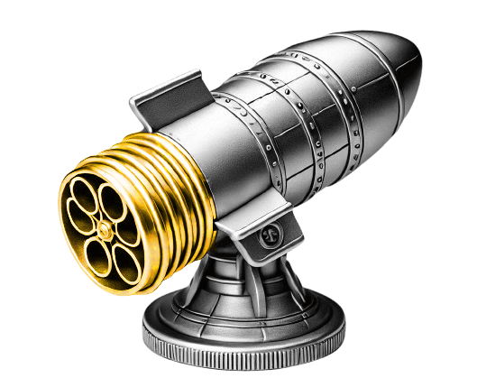

Mainstream
At the moment you can't attend a steerco or meeting without hearing the word data products; there's not a team around where we're not apart of their day to day operations and managed to secure our place as an integral part of the companies long term strategy.
This was the year we smashed that sort after 1000 regular user mark. The approach of management via communities & the datamesh is understood and has proven to be a viable alternative. We can say in all certainty this was the year we sold out and went the pop route.
#whataboutthefans #theyusedtobecool #1kbaby #flavorofthemonth

Data Products
Absolutely mind boggling to think at the start of the year we still had 200+ DRSs running and only a handful of data products even in the pipe.
We managed to introduce Datadéx, integrate automated pipelines and as of today over 150 data products and counting!
#whataboutthefans #theyusedtobecool #1kbaby #flavorofthemonth
Infrastructure
The start of the year was rough - we came from two teams, different voices and messages, different ways of working and at the same time, trying to align the business on the beauty that could be the datamesh (aka building a data architecture on decentralized responsibility / self-serve design)
We'd all be lying if we said it was an easy start for ASDY - it took us a while to work ourselves out (sometimes felt more like an 80s coming of age movie!)
Finding that balance between leveraging where we'd come from, as well as what we wanted our future to look like - but think we could all agree we've come out the other side looking good and all the more stronger for it üí™
#tookawhile #morethanthesumofitsparts #worththewait #bffs

DevOps & K8
This overlooked realm, a consequence of algorithmic judgments.

The Future
The collective story sculpted by the architects.
By The Numbers
7322 New Glossary Terms Created
6 World Cups For Australia üèè
1 Platform Retired (Up 100%)
12 Potatoes (Up 142%)
14732 Reminders To Update Confluence
808 Unique Skywise Users
TBD Dataproducts Created
1 Glimpse Of The Future (SAP Pushback)
5 New Team Members
Olumides (Wife) 2023 FPL Champion üèÜ